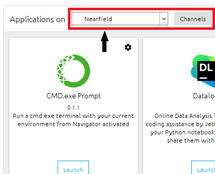
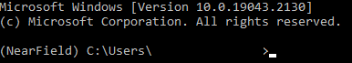

.jpg)
Figure 2: Alignment of horns using a laser level
The circular track system is currently being used to test a variety of surfaces and their response to EM excitation in the X-Band (8-12 GHz). It consists of 3 main components, the Agilent 8720ES Vector Network Analyzer (VNA) and associated antennae apparatus, the rotary stage, and associated control apparatus, and finally the National Instruments (NI) PXIe-1071 Modular Instrumentation body. The 3 components will be discussed in further detail below.
The setup is shown below, With a DUT set up on the stand. The locations of the major components are indicated
This section outlines the installation, and update of the package. We cannot assume that the computer in the nearfield room will always have the script locally available.
The Github repository can be cloned either through Github gui, Git CLI or simply downloading the zip file from the Github page. It can be accessed at the following link: MARS REPO. please contact Keigan MacDonell for access to the repository (). When the folder is in the appropriate directory, run the following command in the command prompt opened using anaconda navigator: either open it from anaconda navigator or the start menu:
 
Ensure that the environment is set as above, ie. you are working inside the nearfield
environement, then run the following code:
pip install --editable .
The ctrack script and all dependencies are now installed
This section will detail how to quickly get set up to take an angle sweep measurement from -70 to 70 degrees around the surface. The PXIe is not used in this case
Firstly ensure that the VNA has been on for at least one hour before taking
measurements. This is to ensure that the VNA has warmed up to give the most
accurate results. The BBBBB or AAAAA calibration can be used, or it is
highly recommended to re-calibrate if any of the connectors or cables have
changed.
Ensure that all the connections are plugged in as follows:
VNA is plugged in and on, and the GPIB connector is plugged into the computer’s USB port
Ensure both TX and RX horns have the coaxial cables connected tightly with the proper torque setting (0.9 Nm)
Ensure that that the power supply is plugged in and connected to the motor controller board.
Ensure Arduino is plugged into the computer USB port
When all connections are properly made, power on all apparatus. Align the the horns using the laser apparatus, as shown below:
The stand uses elastics to hold the surface securely in place. Ensure that the notches accept the edge of the surface to ensure a zero degree incident angle at the resting position. The stand indexes into a notch in the rotary stage, so do not force the stand into position, it will only fit in one direction.
Navigate to the desired save directory, and create a folder called cli_measurements.
This is done to avoid overwriting previous data, and to ensure that the user knows
where the saved data is
When the horns are level, the arm may be moved to the -70 degree location
(Clockwise from the original resting position) using the following command:
This will move the arm to 70 degrees clockwise position. The sweep will start when the following command is executed. The -n option allows you to specify the name of the sweep, as seen below, replacing name with the desired name. The command will autogenerate a directory structure to save the results as long as the cli_measurements folder is present, but this can be overwritten if needed with a -p command.
This will begin a sweep from -70 degrees to 70 degrees consisting of a 140 degree arc,
with 280 distinct data points (a 0.5 degree sweep increment).
The sweep will take about 10 minutes to complete, after which the results are output
as a CSV file which can be used as desired for further data processing.
The script is currently located at:
C/Users/keiganmacdonell/OneDrive - Carleton University/REPOS/
MARS-CircularTrackSystem/old/templates/python/may13.
It is backed up as well to github. One does not need to be in this directory to run the
scripts, the only requirement is to create a folder called cli_measurements in the
current CMD promt directory
The following is a comprehensive list of all commands currently implemented in the script. The whole script is modular and uses shallow wrapper functions to excecute the underlying code, using the click python library:
This command returns a FreqSweepParams object with the frequency sweep start,
end, number of points, power and averaging. It will also print the information to the
console screen.
Use
ctrack getfreq
Expected output example
start:8.000E+09 stop:1.200E+10 points:201 power:-10.00 averaging:1
This command will allow a user to specifiy the start and end frequencies
(specify in GHz, conversion is automatic) and the number of points. If an
invalid entry is performed, the VNA will default to a specific value. The
following will set a frequency sweep from 8 GHz to 12 GHz with 1601 points.
Use
ctrack setfreq -s 8 -e 12 -p 1601
Expected output example
This command produces no output, but the results can be easily checked with a
getfreq command
This command allows a user to specify the power in dB for the sweep, from +5 to -80
dB
Use:
ctrack setpwr -p -10
Expected output example
No output but can be again checked as above.
This command allows the user to quickly rotate the arm a desired number of degrees
clockwise or counterclockwise. The frame of reference is facing the stage from the end
of the table. A ‘l’ or ‘r’ at the end of the command denotes the direction (l = cw, r =
ccw)
Use
ctrack rotate -d 70 l
Expected output example
The arm will rotate as long as the power supply is on
This command switches the VNA display to a 4 window display with all S
parameters shown.
Use
ctrack display4
This script runs a sweep of angles from the start location to end location.
use
ctrack asweep -a -70 70 -s 0.5 -n PEC_0db_sweep_2
Expected output example
Console window will output step feedback and current angle, while arm will move
and take measurements. Data is saved in the directory the script is run from in a
folder called cli_measurements
This command will perform a stationary sweep at the specified angle
use
ctrack fsweep -a 0 -n PEC_0db_sweep_2
Expected output example
Will save data in a folder in the directory the script is run from called
cli_measurements
This script sets all channels on the NI PXIe module to the given voltage
use
ctrack nisetall -v 2
Expected output example
Sets all channels on the NI to 2 volts
This script sets one channel on the NI PXIe module to the given voltage
use
ctrack nisetone -v 2 -c 0
Expected output example
Sets channel 0 on the NI to 2 volts. One can write a series of commands in a batch
file to precisely set all desired channels to the right voltage quickly
This script sets the IF filter bandwidth to the desired value. The values are discrete
and can be set to 10, 30, 100, 300, 1000, 3000, 3700 or 6000 Hz respectively.
use
ctrack setifbw -f 3000
Expected output example
Sets IF filter BW to 3000 Hz.
The rotary stage is a RobotDigg PT-GD201 driven by a NEMA-17 form
factor motor. The motor is a bipolar stepper, with 4 inputs which can be
driven by a variety of different controllers. The current motor is capable of
handling 1.5 Amps maximum under load. The driver board being used is a
MP6500 Stepper Motor Driver Carrier by Pololu but any similar driver can
be used such as the DRV8825 that can handle at least 1 amp of current
output continuously. The stage is calibrated so that one full revolution of
the stepper motor shaft is equivalent to a 2 degree movement of the upper
rotating portion of the stage. Thus a conversion factor can be obtained to
convert between number of steps and number of degrees (1 degree = 100
steps).
The motor system is driven by an arduino uno, as a cheap way to interface the serial commands from the python script to the rotary stage. A breakdown of the entire system is shown below on a breadboard. The actual system is contained inside an enclosure near the setup:
The antennae are mounted on a set of mounts that allow the variation of the antennae polarization in the x and y directions. The diagrams below show the operation of the mount:
The DUT stand is designed to hold planar metasurfaces of various forms
The VNA being used is the Agilent 8720ES. It is capable of producing frequencies from 50 MHz to 20 GHz, at a variety of power ranges. Each frequency sweep can consist up to 1601 distinct points. Many of these features can be controlled to a degree with the scripts. As described in section 4.1 there are commands to set various aspects of the sweep, including start and stop frequencies and number of points as well as port power.
For some reason, the PXIe will sometimes show an amber LED on the interface
connection, this means that the device is working but not connected. There are a set
of steps to perform to ensure it is detected properly. First power off the computer
and the PXIe. Unplug the AC cable from the PXIe and hold the power button for 10
seconds. Re-insert the power cable, and turn on the PXIe while ensuring the
computer is powered off. Then power the computer on. This should allow for the
PXIe to be detected and one can open the NI MAX software to verify functionality. If
this is still not working, ensure that the thunderbolt 4 cable is plugged into the
thunderbolt 4 port on the computer, denoted by a lighting bolt surrounded by a
square The NI PXIe is controllable through the NI MAX gui, to set proper bias
voltages through the analog output module. This is especially useful for testing
active metasurfaces. Script commands allow for the pxie to be set easily.
A sample batch script below shows how to set a bias, then run a sweep:
@echo off
echo ‘‘Setting NI Voltages"
ctrack␣nisetone␣-c␣0␣-v␣1
ctrack␣nisetone␣-c␣1␣-v␣2
ctrack␣nisetone␣-c␣2␣-v␣3
echo␣‘‘Done"
ctrack rotate -d 70 l
ctrack asweep -a -70 70 -s 0.5 -n name
The libraries used are as follows:
numpy
pyserial
click
nidaqmx
pyvisa